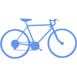

O mnie
Mam na imię Gosia! Zaczynam swoją przygodę z programowaniem Frontend. Moje doświadczenie jest bardzo bogate, acz zróżnicowane. Szukam swojej drogi. Jestem kreatywna, sumienna i nastawiona pozytywnie do życia. Przywiązuję wagę do szczegółów, jestem zorganizowana i otwarta na ludzi.
Doświadczenie zawodowe
- Wrzesień 2020 - obecnie:
PayPal - Consumer Risk Investigations middle agent - dzięki: Majorel
Praca zdalna dla amerykańskiej korporacji finansowej w środowisku międzynarodowym. Obecnie ocena ryzyka dla firmy i klientów z całego świata poprzez sprawdzanie podejrzanych kont użytkowników i ocenę ich intencji. Walka z organizacjami przestępczymi operującymi na platformie PayPal. Wcześniej rozwiązywanie konfliktów handlowych poprzez ocenę dowodów w sprawach. Praca wykonywana z użyciem pisanego języka angielskiego ze zdalnymi szkoleniami w języku angielskim, przeprowadzanymi zdalnie przez pracowników PayPal z całego świata.
- 3,5 miesiąca: Biuro rachunkowe Atma - Pomocnicze stanowisko księgowe
Doświadczenie w obsłudze magazynu walut, wyciągów bankowych i raportów kasowych oraz rozliczaniu faktur.
- 3 lata i 2 miesiące: Data Space - Sekretarka / Recepcjonistka / Referent ds. księgowych i Copywriter
Rozpoczęcie pracy na stanowisku sekretarki, później recepcjonistki i awans na stanowisko księgowe. Doświadczenie w księgowaniu przelewów bankowych, wprowadzaniu faktur i tworzeniu dokumentów dotyczących środków trwałych. Stworzenie unikalnej encyklopedii czterdziestu gatunków dzikich kotów w języku polskim i angielskim dla fundacji. Doświadczenie z obsługą gości, korespondencji, list obecności i kalendarza spotkań.
- 3 sezony: Talia S. Eckert lodziarnia - sprzedawca
Doświadczenie w bezpośredniej obsłudze klienta polskiego i zagranicznego oraz kasy fiskalnej. Praca stacjonarna i wyjazdowa w obrębie kraju.
Języki
- Angielski C1
- Polski - ojczysty
Wykształcenie
- Zawód Frontend Developer w InfoShare Academy
- Pierwszy stopień księgowości w Stowarzyszeniu księgowych w Polsce
- Licencjat i Magister Administracji na Uniwersytecie Mikołaja Kopernika w Toruniu
Zainteresowania
-
Mindfullness
Praktykuję buddyjskie techniki wyciszania umysłu i koncentracji.
-
Zwierzęta
Kocham wszystkie zwierzęta od kiedy pamiętam. Moimi ulubieńcami są psy i dzikie koty.
-
Natura
Uwielbiam spacery w naturze, szczególnie po górach. Często łączę je z technikami mindfullness aby jak najpełniej cieszyć się pięknem przyrody.
-

Jazda na rowerze
Uwielbiam wiatr we włosach, wolność i swobodę jaką daje mi jazda na rowerze.
-

Układanie puzzli
W czasie pandemii powróciłam do hobby z dzieciństwa i teraz pomaga mi wyciszyć się przed snem i daje wiele satysfakcji w codziennym życiu.